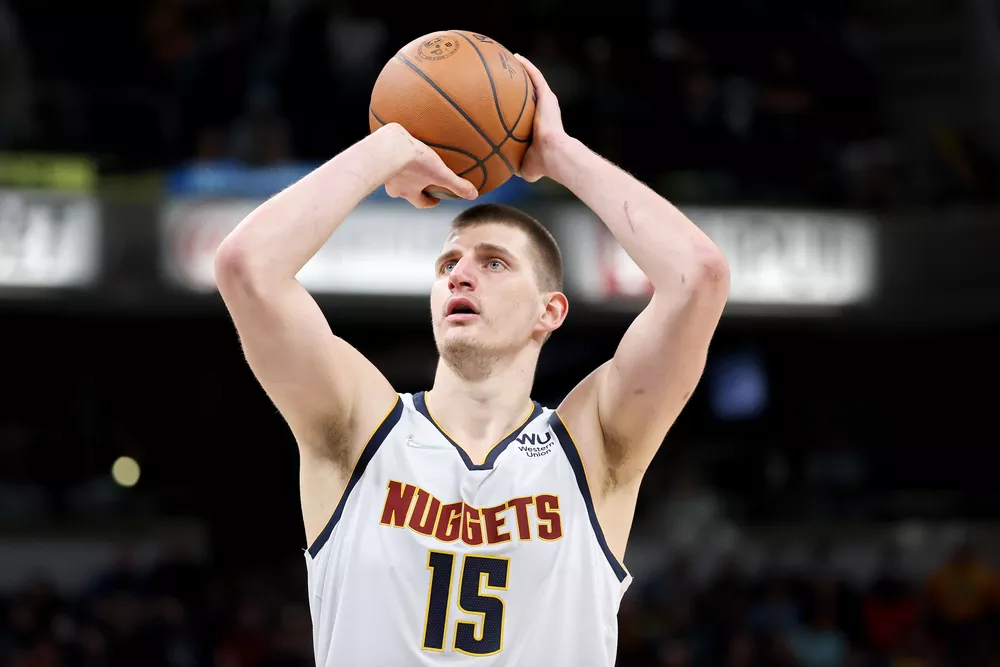

Pivô sérvio recebeu 65 votos para o primeiro lugar dos 100 possíveis; jornalistas especializados e comentaristas participaram da eleiçã
Aos 27 anos, o jogador teve as melhores médias de sua carreira de sete temporadas na NBA em pontos (27,1), rebotes (13,8), roubos (1,5) e tocos (0,9). As 7,9 assistências foram a segunda melhor marca, só atrás da última temporada. Jokic liderou os Nuggets ao sexto lugar da Conferência Oeste na temporada regular. O time acabou eliminado na primera fase dos playoffs pelo Golden State Warriors por quatro jogos a um.
Primeiro pivô a alcançar o prêmio desde Shaquille O'Neal, em 2000, o sérvio superou o cestinha da temporada regular, Joel Embiid, e um dos mais premiados jogadores da atualidade, Giannis Antetokounmpo, que foi MVP das últimas finais. É o quarto ano consecutivo que um jogador de fora dos Estados Unidos leva o prêmio individual mais importante da NBA.
Ultimas Noticias